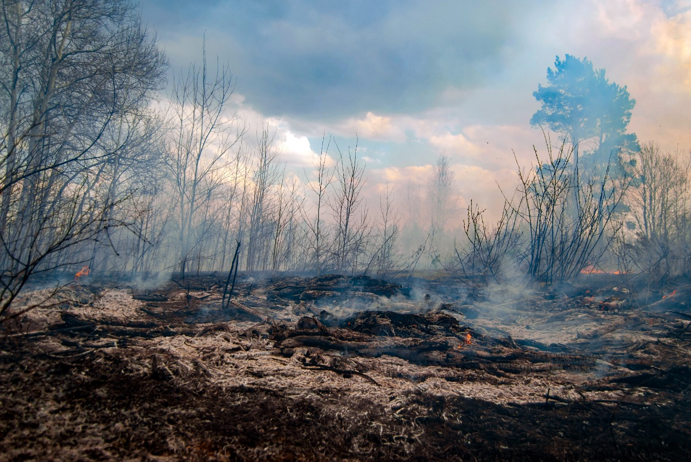
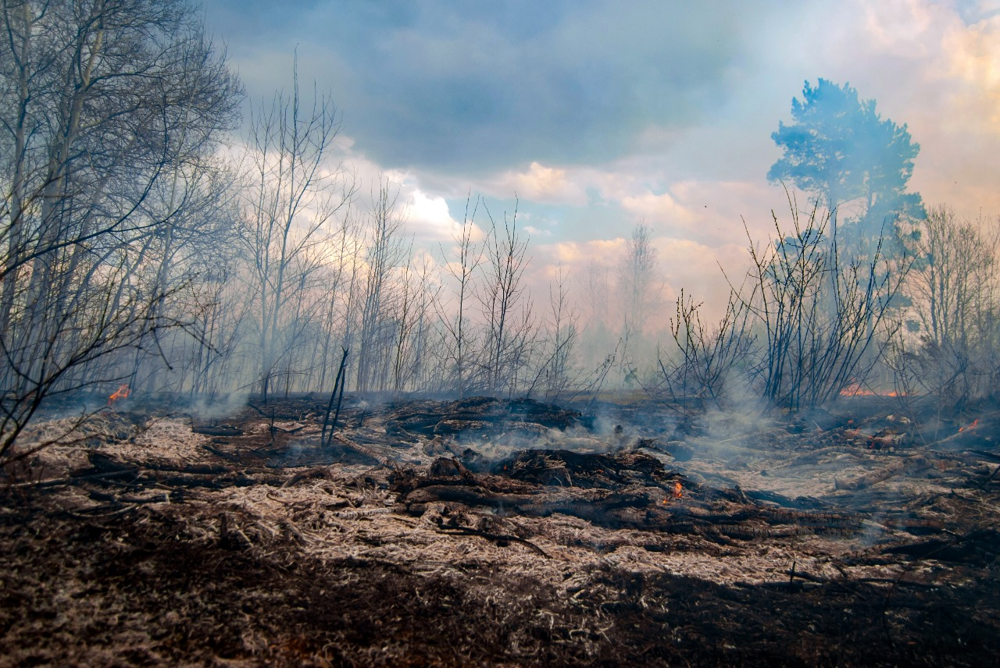
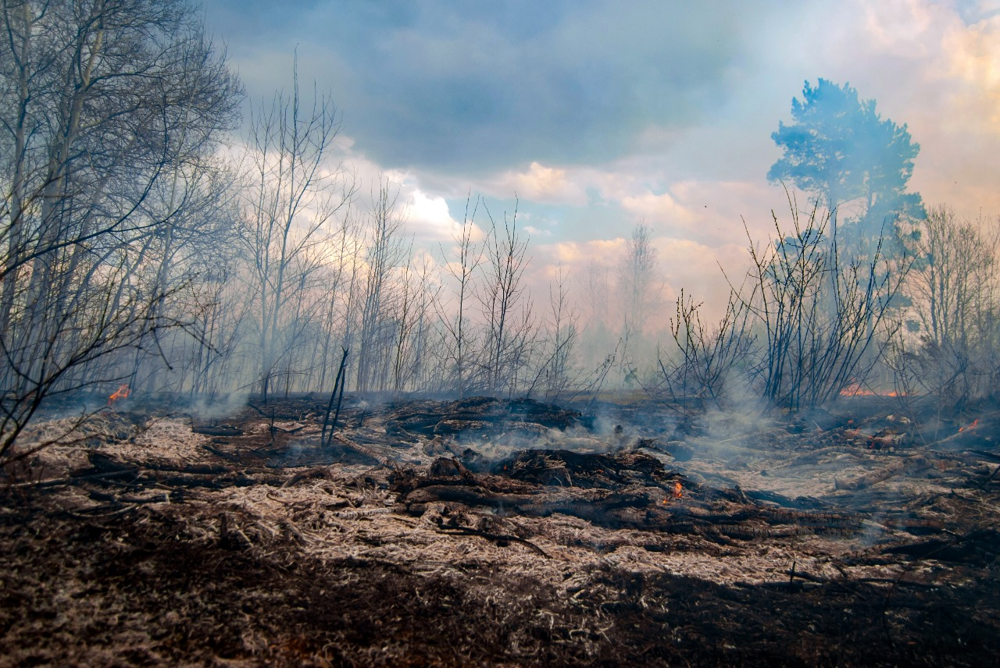

Imagens de Destaque
 


As queimadas são incêndios descontrolados que afetam grandes áreas de vegetação, podendo causar impactos ambientais e sociais severos. São provocadas tanto por ações humanas quanto por causas naturais.
